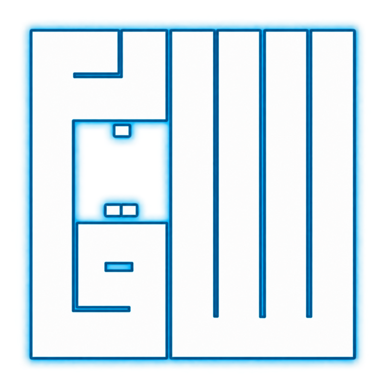

كل أعمال سابق،
في مكان واحد.
طلبات المذكرات، رسائل العملاء، تنبيهات التشغيل وتكاملات المكتب.
تقتصر بيانات المركز على الإدارة المصرح لها.
زيارة الموقع الرسمي
طلبات المذكرات، رسائل العملاء، تنبيهات التشغيل وتكاملات المكتب.
تقتصر بيانات المركز على الإدارة المصرح لها.
زيارة الموقع الرسمي